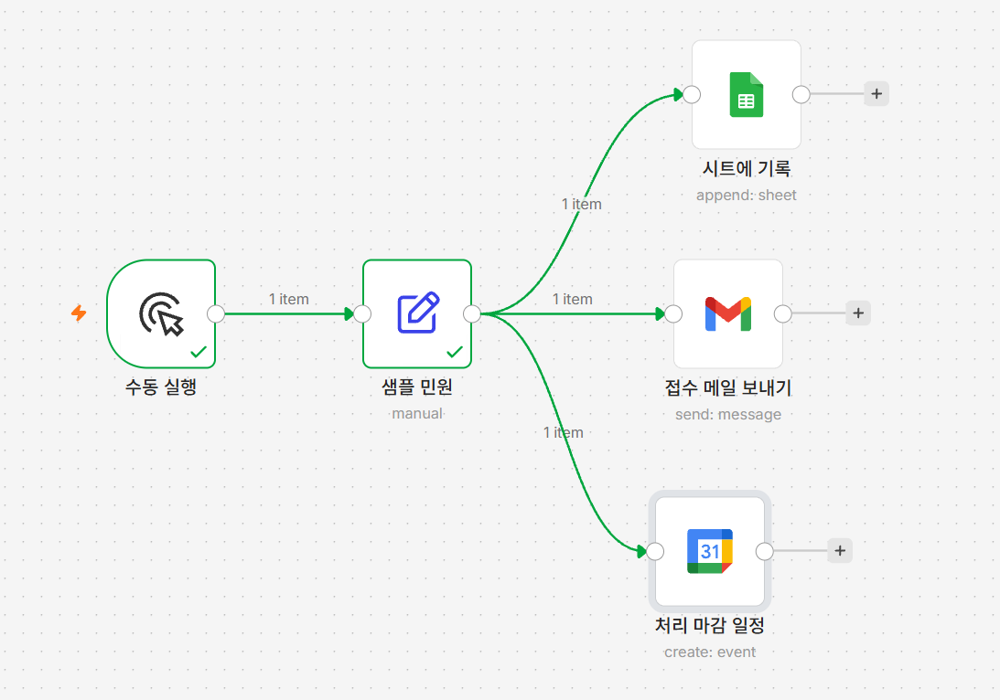
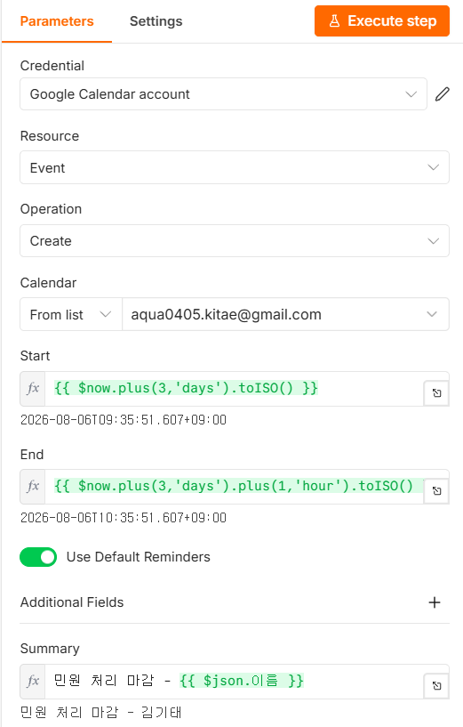

05 캘린더 일정 자동 생성
3일 뒤 처리 마감을 잡습니다
왜 이게 필요한가
- 민원에는 접수일로부터 며칠 이내라는 처리 기한이 있지만, 그 날짜를 계산해 적어두는 일은 사람이 합니다 — 월말·주말이 끼면 헷갈리고 바빨 날은 깜박합니다
- 기한을 넘기면 민원인에게도 담당자에게도 곱란해지는데, 그 이유는 대개 일을 안 해서가 아니라 잊어서입니다
- 해결: 접수와 동시에 3일 뒤 날짜를 계산해 캘린더에 자동 등록하고, 구글 캘린더의 기본 알림까지 그대로 받음
$now.plus(3,'days')가 날짜 계산을 기계에 맡깁니다
사람이 손으로 "오늘부터 3일 뒤"를 세다 보면 오늘을 포함할지 말지부터 헷갈립니다. 이 표현식은 월이 바뀌든 해가 바뀌든 틀리지 않습니다.
이번 시간에 만들 것
민원이 접수된 날짜로부터 3일 뒤를 처리 마감일로 계산해 캘린더에 자동 등록하는 단계를 추가합니다.
[그림 5-1] 완성 —
샘플 민원에서 세 갈래로 갈라진 캔버스
따라하기
- Google Calendar 노드 추가하기
샘플 민원오른쪽+→Google Calendar - 자격증명 연결하기
Sign in with Google→ 같은 계정 선택 → 허용 →Google Calendar account생성 - Resource·Operation 확인하기
기본값
Event·Create그대로 - 캘린더 고르기
Calendar→ 목록에서 본인 캘린더 선택 - Start 입력하기
표현식 전환 후
{{ $now.plus(3,'days').toISO() }} - End 입력하기
표현식 전환 후
{{ $now.plus(3,'days').plus(1,'hour').toISO() }}Start·End 두 칸 각각 따로 전환 필요 - 일정 제목(Summary) 추가하기
Additional Fields+→Summary→ 표현식 전환 →민원 처리 마감 - {{ $json.이름 }}[그림 5-2] 설정을 마친 Google Calendar 노드
- 노드 이름 바꾸기
처리 마감 일정으로 변경
세 표현식의 의미
$now = 지금 시각, .plus(3,'days') = 3일 더하기,
.toISO() = 캘린더가 알아듣는 날짜 형식으로 변환
실행하고 확인하기
Execute workflow→ 캘린더에서 3일 뒤 날짜 확인민원 처리 마감 - 김기태1시간짜리 일정 = 성공
안 될 때
- 일정이 안 보임 — 3일 뒤 날짜/맞는 캘린더인지 확인
- Calendar 목록이 비어 있음 — 자격증명 연결 재확인
- 날짜·시간 오류 — Start·End 각각 Expression 전환 +
.toISO()확인 - Summary가
{{ $json.이름 }}그대로 나옴 — 표현식 전환 확인
확인 문제
객관식Q1. $now.plus(3,'days').toISO()에서 .toISO()가 하는 역할은?
- 3일을 더한다
- 계산 결과를 구글 캘린더가 알아듣는 날짜 형식으로 바꾼다
- 시간대를 한국으로 바꾼다
- 알림을 설정한다
정답 확인
정답: ② .toISO()가 없으면 캘린더가 값을 날짜로 인식하지 못합니다.
객관식Q2. Start·End 표현식 전환은 어떻게 해야 하나요?
- 둘 중 하나만 전환하면 나머지도 자동 적용된다
- 두 칸을 각각 따로 전환해야 한다
- 전환할 필요 없이 바로 입력하면 된다
- 노드를 새로 만들어야 한다
정답 확인
정답: ② 한 칸에서 누른 표현식 전환은 다른 칸까지 적용되지 않으므로 각각 따로 전환해야 합니다.
단답형Q3. 이번 시간에 계산한 처리 마감 일정의 End는 Start보다 얼마나 뒤인가요?
정답 확인
정답: 1시간 뒤 — $now.plus(3,'days').plus(1,'hour').toISO()로 계산합니다.
이번 단계 워크플로우 받기
따라오다 막혔다면 이 파일을 받아 n8n에서 불러오면 이어서 진행할 수 있습니다.
불러온 뒤 반드시 확인하세요
이 파일에는 자격증명이 들어 있지 않습니다. 불러온 뒤
워크플로우 내려받기 day1-05.json
시트에 기록·
접수 메일 보내기·처리 마감 일정 세
노드를 각각 열어 자격증명을 다시 골라야 합니다. 시트에 기록의
Document 칸과 처리 마감 일정의
Calendar 칸에는 각각 여기에_본인_시트_ID·
본인이메일@example.com 자리표시자가 들어 있고,
샘플 민원 노드의 이메일 값에도 같은
본인이메일@example.com 자리표시자가 들어 있으므로 모두 본인
값으로 바꿔야 합니다. 시트 탭 이름은 시트1로 들어 있으니
본인 시트의 탭 이름이 다르면 목록에서 다시 골라야 합니다.